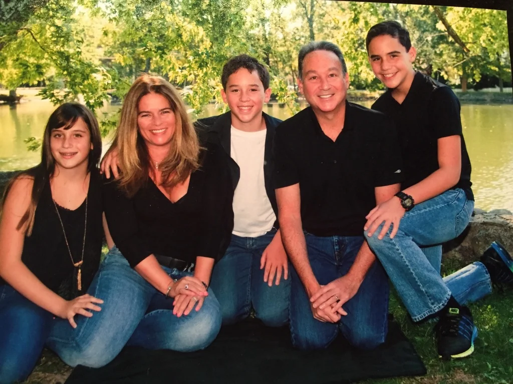

Suicide Prevention
Encourage conversations about emotional pain, challenge stigma, and help people find support.
Why we exist
Spirit of Scotty was created to honor his life by helping people feel seen, heard, supported and less alone.

Our priorities
We aim to build awareness, encourage honest conversation and make trusted information easier to find.
Encourage conversations about emotional pain, challenge stigma, and help people find support.
Share compassionate, practical mental-health and prevention resources with families and communities.
Lift up the lived experiences of people who have faced loss, hardship, and moments of rebuilding.

Our approach
A story can open a door to a conversation. A conversation can help someone feel less isolated. And a little more connection can make a real difference.
Our work is grounded in compassion, public education, and the importance of reaching out — even when it is hard to find the words.
Spirit of Scotty Inc. is a federally recognized 501(c)(3) nonprofit organization. EIN: 92-3569764.
Get involved →Need support now?
Spirit of Scotty is not a crisis service. If you or someone you love needs immediate emotional support in the United States, call or text 988.
Find support and resources →